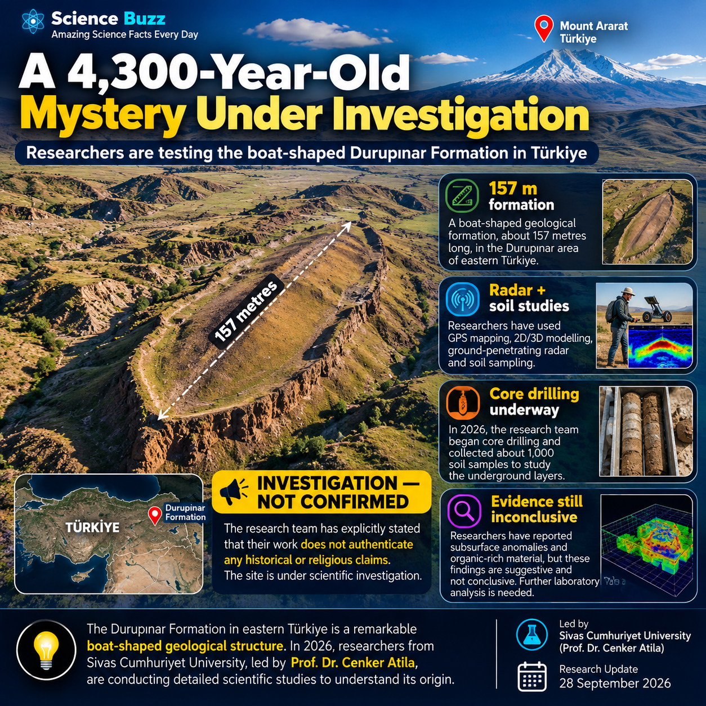

Investigation Ongoing
A 4300 Year Old Mystery Under Investigation
Reseachers are testing the boat shaped Durupinar in Turkiye

Source: Noah's Ark Scan
Reseachers are testing the boat shaped Durupinar in Turkiye

Investigation Ongoing